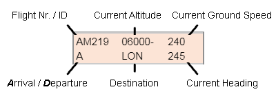

About this project
I have always been interested in programming but never actually got any closer to it than that. But not so long ago I decided to pick it up as a hobby - just when I have the least time in my life alongside family-life and my day-to-day work. :)
The idea of this project comes from my long-term interest in aviation especially in air traffic control and when I had found the ATC-SIM website (great stuff, check it out!). After starting playing it I got hooked instantly and soon I decided that something like this would make a perfect first project for me, so with some help from a couple of friends I started building my own ATC simulator game.
I know it is not a finished project and I have loads of ideas that I intend to build in it yet let alone introducing a few more airports to make it more enjoyable. But for the first time I think it is at the stage when it can deliver some gaming experience.
The rest will follow as I have time to spare...
Please give it a go if you have some time and let me know what you think. Thank you and enjoy!
User Guide
The aim of the simulation is to land the aircrafts on approach onto the runways and directing for take-off the departing ones while separating them in space maintaining a safe distance from eachother, that means aircraft need to be separated by at least 3NM laterally and 1000 feet vertically.
Instructions consist of 2-5 parts divided by space(s).
First part is the flight number ("AA001", "BA182", "NZ515" etc. For convenience, by clicking on the aircraft's progress strip this appears in the text box.
Followed by the clearance type and its parameters as below:
- "A" to change ALTITUDE followed by the required altitude in 100 feet beetween 2000 and 40000 feet. (e.g.: "AA001 A 40" for 4000 feet)
- "S" to change SPEED followed by the required speed in 10 knots between 160 and 300. (e.g.: "AA001 S 20" for 200 knots)
- "H" to change HEADING followed by either the required heading direction in degrees (1-360), where 360 is North, 180 is South (e.g.: "AA001 H 150") or the destination navigation object. (e.g.: "B H wOD")
For instructing an aircraft to start holding procedure at a navigation object write an additional "HP" after the navigation object code. (e.g.: "AA001 H WOD HP")
- "L" to clear an aircraft for LANDING followed by the runway number. (e.g.: "AA001 L 27L")
Landing clearance must only be given when an aircraft's actual heading is within 20 degrees that of the chosen runway angle (runway ID * 10) and when the aircraft is not higher than 4000 feet!
- "T" to clear an aircraft for TAKE-OFF. (e.g.: "AA001 T 27L WOD 80")
Following "T" type the runway intended for take-off then the exit navigation object shown on the flightstrip and finally a departure altitude.
Note: In case the aircraft exits anywhere else other than the nav. object indicated it will count as an improper exit. So make sure that you assign the requested exit to the aircraft before it exits!
After the aircraft reaches the assigned exit navigation object it is handed-over to the next controller. The aircraft remains visible on the radar as a dimmed object and you still need to follow the separation procedures for them until they are visible on the screen but you will have no control over them anymore!
- "W" to clear an aircraft for LINING-UP AND WAITING on the runway before take-off. (e.g.: "AA001 W 27L WOD 80")
This option is mainly for busy periods. Similarly to the take-off command, after "W" type the runway intended for take-off then the exit navigation object indicated and the departure altitude.
When an aircraft is given a waiting clearance already, for take-off clearance only type the flight ID and "T" as the exit parameters will be remembered. (e.g.: "AA001 T")
Progress strip example:
Progress strips of arrival aircraft are orange while the departure ones are green.
Additional commands:
- Press "P" to PAUSE/RESUME the simulation.
- Type "EXIT" or press "End Simulaton" button to exit the game. Your final statistics will be shown.